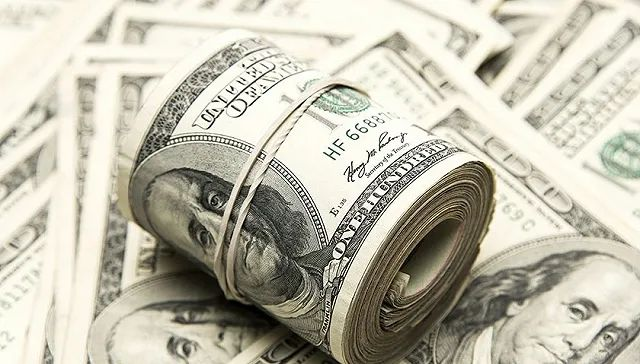

新冠疫情，美国是否会重演意大利发生的一切？
原文链接 备份链接 美国的情况将会变得多糟糕？华盛顿州州长杰伊 · 伊斯利（Jay Inslee）在 3 月 10 日曾表示，仅仅在华盛顿州，两个月内感染人数就可能达到 6.4 万人。而该数据是目前全美公布确诊人数的 16 倍，根据美国约 …

图片来源：视觉中国
记者：崔璞玉
“
根据该计划，政府将向个人发放最多达1200美元的现金，针对夫妻的发放额为2400美元，每个孩子的现金额为500美元。
”
美东时间3月19日，参议院多数党领袖米奇·麦康奈尔（Mitch McConnell）公布了第三轮应对新冠肺炎疫情的紧急救助计划。据美媒报道，这项救助计划可能高达逾万亿美元，其中包括向符合收入门槛的纳税人发放最多达1200美元的现金。
除了向民众派发现金外，参议院还提议向航空公司及相关企业提供2000亿美元贷款，向小企业提供3000亿美元过桥贷款等。据美国全国广播公司财经频道（CNBC）报道，共和党人和民主党人有望在周五举行会议，对细节进行讨论。
在向民众派发现金方面，参议院提出，不缴纳联邦税的人仅能获得600美元，2018年调整后年收入在7.5万美元以上的人将无法获得这项补助。
当天早些时候，美国财政部长史蒂芬·姆努钦（Steven Mnuchin）在接受福克斯商业电视网（Fox Business Network）采访时也提到将向民众发放总额可能高达数千亿美元的现金。
“一旦国会通过了这个计划，我们将在三周内完成发放。接下来，如果六周后，美国仍处在全国紧急情况下，我们将再向每人发放3000美元，”姆努钦说。
不过这一计划可能在国会遭到反对。据CNBC报道，参议院少数党领袖查克·舒默（Chuck Schumer）就表示，仅仅发放一两次现金支票，无法为那些丢掉工作的人提供足够的支持，他认为应该提高并扩大失业险，后者将为美国人提供更长时间的保障。
美国劳工部最新公布的数据显示，上周美国首次申领失业救济人数为28.1万人，远远高于预期的22万人，创2017年9月以来新高。疫情已经使得美国的交通、酒店、休闲等服务业严重受创。
“许多州特别提到了新冠疫情相关的裁员，不少州报告称，服务业相关的行业普遍出现了裁员加剧的情况，尤其是住宿、食品服务业，以及交通和仓储业，”美国劳工部在一份声明中称。
周四发布的另一份数据显示，美国3月费城联储制造业指数降至-12.7，远低于预期的10，为2012年8月以来最低水平。相比2月时的36.7，该指数更是创下有记录以来的最大降幅。
随着检测试剂供给的增加，美国新冠肺炎的确诊人数正在迅速攀升。据约翰·霍普金斯大学的疫情实时追踪数据，截至美东时间19日17：40（北京时间20日05：40），美国累计新冠肺炎确诊病例13060例，死亡157例。
考虑到疫情还在蔓延，经济学家预计，到下周四再度发布新数据时，这一人数或将上升至逾100万人。受疫情影响，许多州和地方政府已经关闭了学校、餐馆、酒吧、剧院，甚至部分工厂，以执行“维持社交距离”的政策。
美国银行在周四发布的一份研报中警告称，新冠病毒引发的经济衰退已经到来。据CNBC报道，该行预测，美国经济将在二季度“崩溃”，GDP将萎缩12%，全年GDP将收缩0.8%。
美国银行还预计，美国失业率很快将翻倍，二季度每个月都将会有约100万人失业，总计350万人。
为了控制病毒扩散，并帮助受到影响的民众，美国总统唐纳德·特朗普近期已经批准了两轮紧急救助计划。本月早些时候，特朗普签署了一项83亿美元的法案，帮助疾控中心等机构对抗病毒，并支持疫苗研发以及医疗用品的分发等。周三晚，特朗普又签署通过了一项1000亿美元的一揽子救助计划，其中包括为工人提供紧急带薪假，提供新冠病毒免费检测等。
美联储也在周四发布声明，将与澳大利亚储备银行、巴西中央银行、丹麦国家银行、韩国银行、墨西哥银行、挪威银行、新西兰储备银行、新加坡金融管理局和瑞典国家银行建立临时美元流动性安排（掉期交易），以减轻全球美元融资市场的压力。
前一天晚上，美联储再宣布紧急救市措施，推出货币市场共同基金流动性工具（MMLF），向金融机构提供贷款，以便金融机构从货币市场共同基金购买优质证券。这是2008年金融危机后美联储首次动用该工具，该工具将一直持续到9月。本周早些时候，美联储还推出了商业票据融资工具（CPFF）与一级交易商信贷机制（PDCF）。
联邦政府和美联储的措施似乎起到了一定的安抚作用。周四收盘，道琼斯工业指数报20087.19点，涨188.27点，涨幅0.95%。纳斯达克指数报7150.58点，上涨2.3%；标准普尔500指数报2409.39点，上涨0.47%。
未经授权 禁止转载

原文链接 备份链接 美国的情况将会变得多糟糕？华盛顿州州长杰伊 · 伊斯利（Jay Inslee）在 3 月 10 日曾表示，仅仅在华盛顿州，两个月内感染人数就可能达到 6.4 万人。而该数据是目前全美公布确诊人数的 16 倍，根据美国约 …
原文链接 备份链接 当人类生存的主题被病毒、大流行病裹挟时，在白宫坐镇的特朗普、民间看好的疾病专家安东尼·福西和美联储主席鲍威尔纷纷出招，是老旧的套路还是定海神针，还未可知 文 |《财经》特派记者 金焱 发自华盛顿 编辑 | 苏琦 3 …
原文链接 备份链接 2月29日，特朗普出席“保守派政治行动大会”。图片来源：CPAC/Twitter 记者 | 潘金花 “ “我一点都不担心。”美国总统特朗普告诉记者，自己不会因为新冠肺炎疫情而取消政治集会。要 ” “我一点都不担心。” …
原文链接 备份链接 据美国《纽约时报》汇总各州公共卫生部门公布的新冠肺炎确诊病例，截至当地时间5日下午，全美已有163例确诊病例，分布在18个州。华盛顿州公共卫生部门5日公布了一例死亡病例，使得全美死亡病例达到了12例。 数据显示，美国 …
原文链接 备份链接 体坛周报全媒体记者 季孟年 出生于1983年的后卫球员普尔·杰特已经在CBA效力多年，本赛季他是福建男篮的一员。就像其他的外援们一样，杰特在新冠疫情爆发之后选择回到了美国。如今，中国的疫情已经得到了有效的控制，CBA也 …